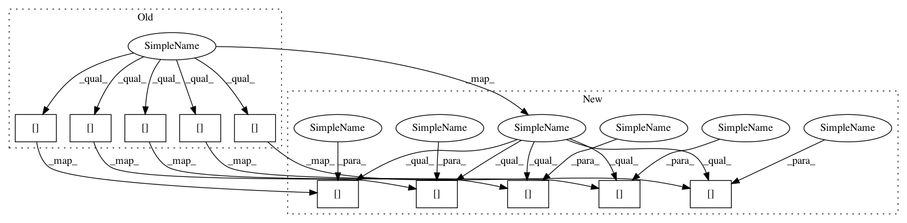

75d3f75b46ab272c07e449c871a1baa104440194,nnmnkwii/frontend/merlin.py,,load_labels_with_phone_alignment,#,162
Before Change
frame_number)
if add_frame_features:
current_block_binary_array = np.zeros(
(frame_number, dict_size + frame_feature_size))
for i in range(frame_number):
current_block_binary_array[i,
0:dict_size] = label_vector
if subphone_features == "minimal_phoneme":
// features which distinguish frame position in phoneme
// fraction through phone forwards
current_block_binary_array[i, dict_size] = float(
i + 1) / float(frame_number)
// fraction through phone backwards
current_block_binary_array[i, dict_size + 1] = float(
frame_number - i) / float(frame_number)
// phone duration
current_block_binary_array[i,
dict_size + 2] = float(frame_number)
elif subphone_features == "coarse_coding":
// features which distinguish frame position in phoneme
// using three continous numerical features
current_block_binary_array[i,
dict_size + 0] = cc_feat_matrix[i, 0]
current_block_binary_array[i,
dict_size + 1] = cc_feat_matrix[i, 1]
current_block_binary_array[i,
dict_size + 2] = cc_feat_matrix[i, 2]
current_block_binary_array[i,
dict_size + 3] = float(frame_number)
elif subphone_features is None:
pass
After Change
frame_number)
if add_frame_features:
current_block_binary_array = np.zeros(
(frame_number, dict_size + frame_feature_size))
for i in range(frame_number):
current_block_binary_array[i,
0:dict_size] = label_vector
if subphone_features == "minimal_phoneme":
// features which distinguish frame position in phoneme
// fraction through phone forwards
current_block_binary_array[i, dict_size] = float(
i + 1) / float(frame_number)
// fraction through phone backwards
current_block_binary_array[i, dict_size + 1] = float(
frame_number - i) / float(frame_number)
// phone duration
current_block_binary_array[i,
dict_size + 2] = float(frame_number)
elif subphone_features == "coarse_coding":
// features which distinguish frame position in phoneme
// using three continous numerical features
current_block_binary_array[i,
dict_size + 0] = cc_feat_matrix[i, 0]
current_block_binary_array[i,
dict_size + 1] = cc_feat_matrix[i, 1]
current_block_binary_array[i,
dict_size + 2] = cc_feat_matrix[i, 2]
current_block_binary_array[i,
dict_size + 3] = float(frame_number)
elif subphone_features is None:
pass
In pattern: SUPERPATTERN
Frequency: 3
Non-data size: 10
Instances
Project Name: r9y9/nnmnkwii
Commit Name: 75d3f75b46ab272c07e449c871a1baa104440194
Time: 2017-10-10
Author: zryuichi@gmail.com
File Name: nnmnkwii/frontend/merlin.py
Class Name:
Method Name: load_labels_with_phone_alignment
Project Name: eriklindernoren/PyTorch-YOLOv3
Commit Name: a93e24d40478062706c912109a4819070d71bc7f
Time: 2021-01-12
Author: florian@flova.de
File Name: utils/transforms.py
Class Name: ImgAug
Method Name: __call__
Project Name: Ghadjeres/DeepBach
Commit Name: b36c799b5c1858f7b1075e30986c2ca899530907
Time: 2017-01-11
Author: hadjeres.g@gmail.com
File Name: deepBach.py
Class Name:
Method Name: parallel_gibbs